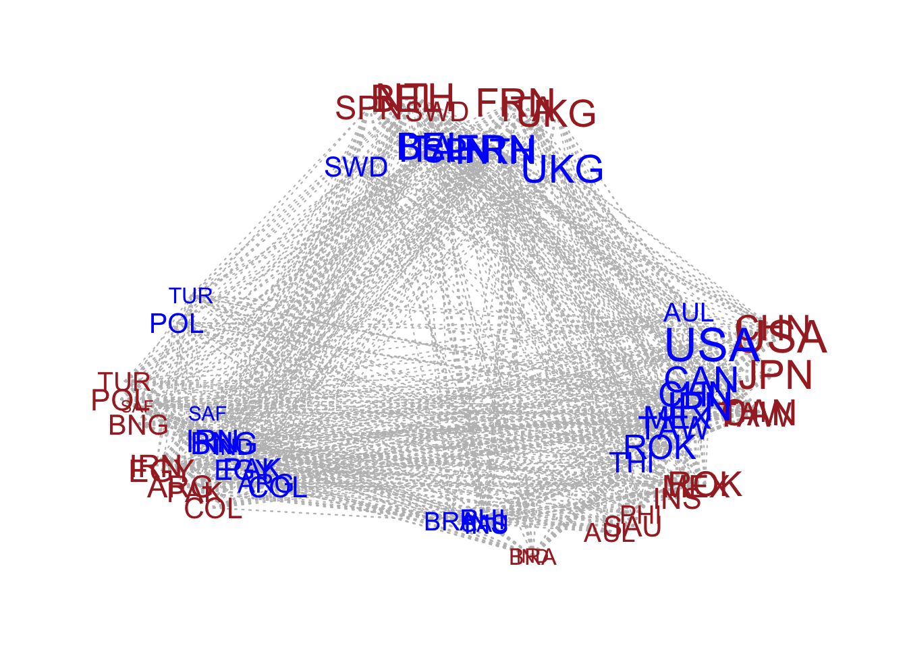
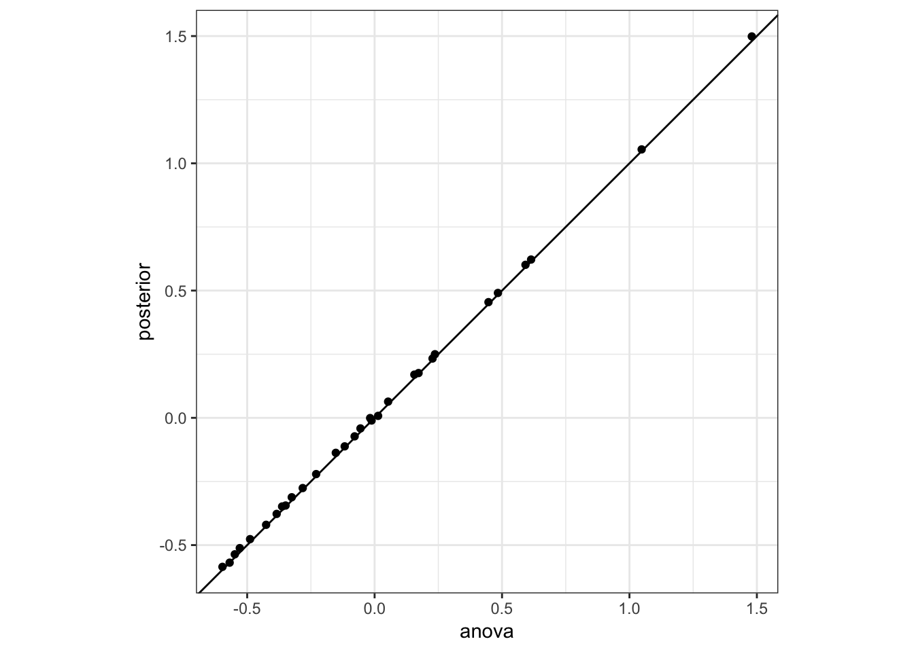
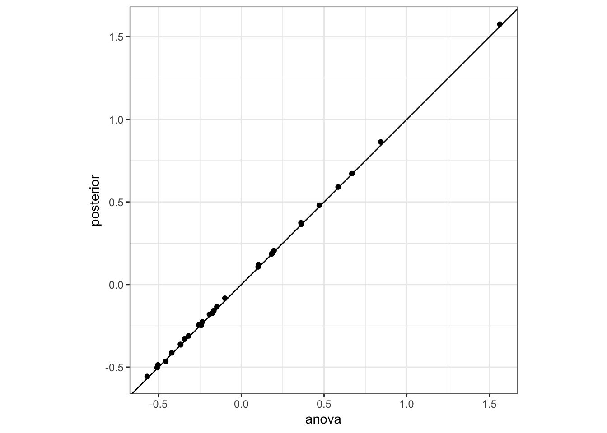

6 amen packages
6.1 Outline
- Gaussian AME model:
ame - Different relation:
ame(...,model=,...)- ordinal data
- censored and fixed rank nomination data
- sampled or missing data
- symmetric relation:
ame(...,symmetric=TRUE,...) - repeated measures data: longitudal data
ame_rep(Y,Xdyad,Xrow,Xcol)
Tutorial: https://github.com/pdhoff/amen/blob/master/inst/doc/amen.pdf
6.2 ame()
\[z_{i,j}=\beta_d^Tx_{d,i,j}+\beta_r^Tx_{r,i}+\beta_c^Tx_{c,j}+\mu+a_i+b_j+u_i^Tv_j+\epsilon_{i,j}\]
\[y_{i,j}=g(z_{i,j})\]
ame(Y,Xd,Xr,Xc,model,R,rvar=TRUE,cvar=TRUE,dcor=TRUE,symmetric=FALSE)
model:
- “nrm”: continuous Y
- “bin”: binary Y
- “ord”: ordinal Y
- “cbin”: censored binary Y
- “frn”: fixed rank Y
“rrl”: row ranks (relationships across rows of Y are not directly comparable)
- Y: named matrix \(n\times n \times p_d\)
- Xd: named array (dyadic covariates)
- Xr: named matrix (nodal covariates)
- Xc: named matrix (nodal covariates)
R: number (dimension of latent factor)
- rvar,cvar,dcor: whether to include row/column/corr effect or not
symmetric: symmetric outcome or not
6.3 Input: prepare the dataset
prepare the dataset
- Get the Xnode,Xdyad from
igraphobject. - Get the Xnode,Xdyad from edgelist dataframe.
library(igraph)
library(igraphdata)
library(dplyr)From igraph object:
data("USairports")
?USairports
USairports## IGRAPH bf6202d DN-- 755 23473 -- US airports
## + attr: name (g/c), name (v/c), City (v/c), Position (v/c),
## | Carrier (e/c), Departures (e/n), Seats (e/n), Passengers (e/n),
## | Aircraft (e/n), Distance (e/n)
## + edges from bf6202d (vertex names):
## [1] BGR->JFK BGR->JFK BOS->EWR ANC->JFK JFK->ANC LAS->LAX MIA->JFK
## [8] EWR->ANC BJC->MIA MIA->BJC TEB->ANC JFK->LAX LAX->JFK LAX->SFO
## [15] AEX->LAS BFI->SBA ELM->PIT GEG->SUN ICT->PBI LAS->LAX LAS->PBI
## [22] LAS->SFO LAX->LAS PBI->AEX PBI->ICT PIT->VCT SFO->LAX VCT->DWH
## [29] IAD->JFK ABE->CLT ABE->HPN AGS->CLT AGS->CLT AVL->CLT AVL->CLT
## [36] AVP->CLT AVP->PHL BDL->CLT BHM->CLT BHM->CLT BNA->CLT BNA->CLT
## + ... omitted several edges#For vertex attributes -Xnode
Xnode_ls=vertex_attr(USairports)
Xnode=matrix(unlist(Xnode_ls),ncol=length(Xnode_ls))
colnames(Xnode)=names(Xnode_ls)
rownames(Xnode)=Xnode_ls$name
Xnode=Xnode[,-1]
#For edge attributes - Xdyad
Xdyad_ls=edge_attr(USairports)
Xdyad=array(c(as_adjacency_matrix(USairports,sparse = FALSE),unlist(Xdyad_ls)),dim=c(nrow(Xnode),nrow(Xnode),length(Xdyad_ls)+1))
dimnames(Xdyad)[[1]]=dimnames(Xdyad)[[2]]=Xnode_ls$name
dimnames(Xdyad)[[3]]=c("relation",names(Xdyad_ls))From dataframe:
transfer it to a igraph then to the array may be the easiest.
#Xdyad
df=igraph::as_data_frame(USairports)
net=graph_from_data_frame(df)
vnames=V(net)$name
Xdyad_ls=edge_attr(USairports)
Xdyad=array(c(as_adjacency_matrix(USairports,sparse = FALSE),unlist(Xdyad_ls)),dim=c(nrow(Xnode),nrow(Xnode),length(Xdyad_ls)+1))
dimnames(Xdyad)[[1]]=dimnames(Xdyad)[[2]]=vnames
dimnames(Xdyad)[[3]]=c("relation",names(Xdyad_ls))
#Xnode
#If your nodal attributes stored in a data.frame
Xnode_df=as.data.frame(Xnode)%>%mutate(Vertex=rownames(Xnode))%>%arrange(Vertex)
head(Xnode_df)## City Position Vertex
## 1 Peach Springs, AZ N355925 W1134859 1G4
## 2 Bradley Lake, AK N565311 W1340930 A23
## 3 Pogo Mines, AK N592603 W1514228 A27
## 4 Kiluda Bay, AK N570308 W1352046 A29
## 5 Allentown/Bethlehem/Easton, PA N403909 W0752625 ABE
## 6 Abilene, TX N322441 W0994055 ABI#Xnode
#need to match the order of Xnode to the order of the Xdyad
Xnode_df=Xnode_df%>%arrange(match(Vertex,vnames))
Xnode=as.matrix(Xnode_df)
rownames(Xnode)=Xnode[,"Vertex"]
Xnode=Xnode[,-3]
Xnode%>%head()## City Position
## BGR "Bangor, ME" "N444827 W0684941"
## BOS "Boston, MA" "N422152 W0710019"
## ANC "Anchorage, AK" "N611028 W1495947"
## JFK "New York, NY" "N403823 W0734644"
## LAS "Las Vegas, NV" "N360449 W1150908"
## MIA "Miami, FL" "N254736 W0801726"6.4 Fit the model: the Gaussian AME model (continuous Y)
6.4.1 The Gaussian AME model
#install.packages("amen")
library(amen)
library(ggplot2)\(y_{i,j}=\mu+a_i+b_j+\epsilon_{i,j}\)
# use the trade data (export) from top 30 countries ranked by gdp
data(IR90s)
names(IR90s) # list## [1] "dyadvars" "nodevars"dim(IR90s$dyadvars) #- array## [1] 130 130 5dimnames(IR90s$dyadvars)## [[1]]
## [1] "AFG" "ALB" "ALG" "ANG" "ARG" "AUL" "AUS" "BAH" "BEL" "BEN" "BFO"
## [12] "BHU" "BNG" "BOL" "BOT" "BRA" "BUI" "BUL" "CAM" "CAN" "CAO" "CDI"
## [23] "CEN" "CHA" "CHL" "CHN" "COL" "COM" "CON" "COS" "CUB" "CYP" "DEN"
## [34] "DJI" "DOM" "DRC" "ECU" "EGY" "EQG" "FIN" "FJI" "FRN" "GAB" "GAM"
## [45] "GHA" "GNB" "GRC" "GUA" "GUI" "GUY" "HAI" "HON" "HUN" "IND" "INS"
## [56] "IRE" "IRN" "IRQ" "ISR" "ITA" "JAM" "JOR" "JPN" "KEN" "LAO" "LBR"
## [67] "LES" "LIB" "MAA" "MAG" "MAL" "MAS" "MAW" "MEX" "MLI" "MON" "MOR"
## [78] "MYA" "MZM" "NAM" "NEP" "NEW" "NIC" "NIG" "NIR" "NOR" "NTH" "OMA"
## [89] "PAK" "PAN" "PAR" "PHI" "PNG" "POL" "POR" "PRK" "QAT" "ROK" "RUM"
## [100] "RWA" "SAF" "SAL" "SAU" "SEN" "SIE" "SIN" "SOM" "SPN" "SRI" "SUD"
## [111] "SWA" "SWD" "SWZ" "SYR" "TAW" "TAZ" "THI" "TOG" "TRI" "TUN" "TUR"
## [122] "UAE" "UGA" "UKG" "URU" "USA" "VEN" "YEM" "ZAM" "ZIM"
##
## [[2]]
## [1] "AFG" "ALB" "ALG" "ANG" "ARG" "AUL" "AUS" "BAH" "BEL" "BEN" "BFO"
## [12] "BHU" "BNG" "BOL" "BOT" "BRA" "BUI" "BUL" "CAM" "CAN" "CAO" "CDI"
## [23] "CEN" "CHA" "CHL" "CHN" "COL" "COM" "CON" "COS" "CUB" "CYP" "DEN"
## [34] "DJI" "DOM" "DRC" "ECU" "EGY" "EQG" "FIN" "FJI" "FRN" "GAB" "GAM"
## [45] "GHA" "GNB" "GRC" "GUA" "GUI" "GUY" "HAI" "HON" "HUN" "IND" "INS"
## [56] "IRE" "IRN" "IRQ" "ISR" "ITA" "JAM" "JOR" "JPN" "KEN" "LAO" "LBR"
## [67] "LES" "LIB" "MAA" "MAG" "MAL" "MAS" "MAW" "MEX" "MLI" "MON" "MOR"
## [78] "MYA" "MZM" "NAM" "NEP" "NEW" "NIC" "NIG" "NIR" "NOR" "NTH" "OMA"
## [89] "PAK" "PAN" "PAR" "PHI" "PNG" "POL" "POR" "PRK" "QAT" "ROK" "RUM"
## [100] "RWA" "SAF" "SAL" "SAU" "SEN" "SIE" "SIN" "SOM" "SPN" "SRI" "SUD"
## [111] "SWA" "SWD" "SWZ" "SYR" "TAW" "TAZ" "THI" "TOG" "TRI" "TUN" "TUR"
## [122] "UAE" "UGA" "UKG" "URU" "USA" "VEN" "YEM" "ZAM" "ZIM"
##
## [[3]]
## [1] "conflicts" "exports" "distance" "shared_igos" "polity_int"gdp=IR90s$nodevars[,2]
topgdp=which(gdp>=sort(gdp,decreasing = TRUE)[30])
Y=log(IR90s$dyadvars[topgdp,topgdp,2]+1)
Y[1:5,1:5]## ARG AUL BEL BNG BRA
## ARG NA 0.05826891 0.2468601 0.03922071 1.76473080
## AUL 0.0861777 NA 0.3784364 0.10436002 0.21511138
## BEL 0.2700271 0.35065687 NA 0.01980263 0.39877612
## BNG 0.0000000 0.01980263 0.1222176 NA 0.01980263
## BRA 1.6937791 0.23901690 0.6205765 0.03922071 NA6.4.4 No row variance, column variance or dyadic correlation
\[y_{i,j}=\beta_d^Tx_{d,i,j}+\beta_r^Tx_{r,i}+\beta_c^Tx_{c,j}+\mu+\epsilon_{i,j}\]
fit_rm=ame(Y,Xd=Xd,Xr=Xn,Xc=Xn,model = "nrm",rvar = FALSE,cvar = FALSE,dcor=FALSE,plot=FALSE,print = FALSE)summary(fit_rm)##
## Regression coefficients:
## pmean psd z-stat p-val
## intercept -4.417 0.170 -25.947 0.000
## pop.row -0.318 0.022 -14.621 0.000
## gdp.row 0.664 0.024 27.417 0.000
## polity.row -0.007 0.005 -1.335 0.182
## pop.col -0.280 0.023 -12.328 0.000
## gdp.col 0.622 0.024 25.590 0.000
## polity.col 0.002 0.005 0.509 0.611
## conflicts.dyad 0.238 0.057 4.152 0.000
## distance.dyad -0.053 0.004 -14.407 0.000
## shared_igos.dyad -0.021 0.028 -0.739 0.460
## polity_int.dyad 0.000 0.001 0.280 0.780
##
## Variance parameters:
## pmean psd
## va 0.000 0.000
## cab 0.000 0.000
## vb 0.000 0.000
## rho 0.000 0.000
## ve 0.229 0.0116.4.5 additive and multiplicative effects model (ame)
\[y_{i,j}=\beta_d^Tx_{d,i,j}+\beta_r^Tx_{r,i}+\beta_c^Tx_{c,j}+\mu+a_i+b_j+u_i^Tv_j+\epsilon_{i,j}\] Input:
Y- a named matrix Xd - a named array \(n\times n \times p_d\) dyadic covariates Xr - a named matrix \(n\times p_r\) Xc - a named matrix \(n\times p_c\) R - dimension of latent factor \(U\) and \(V\) are \(n\times R\) matrices
fit_ame2=ame(Y,Xd=Xd,Xr=Xn,Xc=Xn,model = "nrm",R=2,plot=FALSE,print = FALSE)summary(fit_ame2)##
## Regression coefficients:
## pmean psd z-stat p-val
## intercept -4.096 0.777 -5.270 0.000
## pop.row -0.281 0.069 -4.081 0.000
## gdp.row 0.567 0.092 6.187 0.000
## polity.row -0.001 0.010 -0.064 0.949
## pop.col -0.236 0.072 -3.290 0.001
## gdp.col 0.521 0.100 5.208 0.000
## polity.col 0.008 0.010 0.761 0.447
## conflicts.dyad 0.016 0.037 0.420 0.674
## distance.dyad -0.038 0.004 -9.542 0.000
## shared_igos.dyad 0.095 0.074 1.281 0.200
## polity_int.dyad -0.001 0.000 -2.273 0.023
##
## Variance parameters:
## pmean psd
## va 0.074 0.023
## cab 0.030 0.017
## vb 0.072 0.022
## rho 0.620 0.037
## ve 0.064 0.0046.4.6 circle plot for estimated latent factor
circplot(Y,U=fit_ame2$U,V=fit_ame2$V) #only available for 2 dimension latent factor
6.5 Choice of model in ame: binary, ordinal, discrete or sparse relations
6.5.1 binary outcome
Probit model.
\[z_{i,j}=\beta_d^Tx_{d,i,j}+\beta_r^Tx_{r,i}+\beta_c^Tx_{c,j}+\mu+a_i+b_j+u_i^Tv_j+\epsilon_{i,j}\]
\[y_{i,j}=1(z_{i,j}>0)\] Interpretation on the coefficients: one unit change in \(x_i\) leads to a \(\beta_i\) change in the z-score of Y: \(\beta_i\phi(\beta_0+\beta_1x_1+...)\)
data("lazegalaw")
names(lazegalaw)## [1] "X" "Y"dimnames(lazegalaw$X) #nodal covariates## [[1]]
## NULL
##
## [[2]]
## [1] "status" "female" "office" "seniority" "age" "practice"
## [7] "school"dimnames(lazegalaw$Y) #relation and dyadic covariates## [[1]]
## NULL
##
## [[2]]
## NULL
##
## [[3]]
## [1] "advice" "friendship" "cowork"Y=lazegalaw$Y[,,2]
Xd=lazegalaw$Y[,,-2]
Xn=lazegalaw$Xfit_amebin3=ame(Y,Xd=Xd,Xr=Xn,Xc=Xn,model = "bin",R=2,plot=FALSE,print = FALSE)6.5.2 ordinal outcome
ordinal probit model
data(sheep)
names(sheep) ## [1] "dom" "age"Y=sheep$dom
x=sheep$age-mean(sheep$age) #centralize - beta can be (-,+)
Xd=outer(x,x)
Xn=cbind(x,x^2)
colnames(Xn)=c("age","age2")fit_ameord=ame(Y = Y,Xdyad = Xd,Xrow = Xn,Xcol = Xn,model = "ord",plot=FALSE,print = FALSE)summary(fit_ameord)##
## Regression coefficients:
## pmean psd z-stat p-val
## age.row 0.158 0.051 3.108 0.002
## age2.row -0.086 0.019 -4.468 0.000
## age.col -0.242 0.039 -6.138 0.000
## age2.col -0.008 0.015 -0.568 0.570
## .dyad 0.043 0.008 5.371 0.000
##
## Variance parameters:
## pmean psd
## va 0.433 0.153
## cab 0.039 0.073
## vb 0.215 0.084
## rho -0.399 0.092
## ve 1.000 0.0006.5.3 censored and fixed rank nomination data
Fix rank nomination: named a fixed number of people. – ordinal + censored
(...,model="frn",odmax=..)
odmax: maximum number of links each row may have
higher shows stronger relationship – make sure your data follows the right order.
data("sampsonmonks")
dimnames(sampsonmonks)## [[1]]
## [1] "ROMUL" "BONAVEN" "AMBROSE" "BERTH" "PETER" "LOUIS" "VICTOR"
## [8] "WINF" "JOHN" "GREG" "HUGH" "BONI" "MARK" "ALBERT"
## [15] "AMAND" "BASIL" "ELIAS" "SIMP"
##
## [[2]]
## [1] "ROMUL" "BONAVEN" "AMBROSE" "BERTH" "PETER" "LOUIS" "VICTOR"
## [8] "WINF" "JOHN" "GREG" "HUGH" "BONI" "MARK" "ALBERT"
## [15] "AMAND" "BASIL" "ELIAS" "SIMP"
##
## [[3]]
## [1] "like_m2" "like_m1" "like" "dislike"
## [5] "esteem" "disesteem" "pos_influence" "neg_influence"
## [9] "praise" "blame"Y=sampsonmonks[,,3] #like
apply(Y>0,1,sum,na.rm=T) # named at least 4 people## ROMUL BONAVEN AMBROSE BERTH PETER LOUIS VICTOR WINF JOHN
## 3 3 4 3 3 3 3 3 3
## GREG HUGH BONI MARK ALBERT AMAND BASIL ELIAS SIMP
## 4 3 3 3 3 3 3 3 3fit_amefrn=ame(Y,R=2,model = "frn",odmax = 4,plot=FALSE,print = FALSE) ## WARNING: Random reordering used to break ties in rankssummary(fit_amefrn)##
## Regression coefficients:
## pmean psd z-stat p-val
## intercept -1.326 0.226 -5.868 0
##
## Variance parameters:
## pmean psd
## va 0.188 0.100
## cab 0.009 0.068
## vb 0.212 0.120
## rho 0.654 0.166
## ve 1.000 0.000Sensored binary
(...,model="cbin",odmax=..)
odmax: maximum number of links each row may have
6.6 symmetric outcome: symmetric=TRUE
6.6.1 symmetric outcome: symmetric=TRUE
\[z_{i,j}=\beta_d^Tx_{d,i,j}+\beta_n^Tx_{i}+\beta_n^Tx_{j}+\mu+a_i+a_j+u_i^T\Lambda u_j+\epsilon_{i,j}\]
\[y_{i,j}=g(z_{i,j})\]
symmetric=TRUE
data("coldwar")
names(coldwar)## [1] "cc" "distance" "gdp" "polity"Y=sign(apply(coldwar$cc,c(1,2),mean)) #avg across time - binary relation
Xn=cbind(apply(log(coldwar$gdp),1,mean),
sign(apply(coldwar$polity,1,mean))
)
Xn[,1]=Xn[,1]-mean(Xn[,1]) #centralize
dimnames(Xn)[[2]]=c("lgdp","polity")
Xd=array(dim=c(nrow(Y),nrow(Y),3))
Xd[,,1]=outer(Xn[,1],Xn[,1])
Xd[,,2]=outer(Xn[,2],Xn[,2])
Xd[,,3]=log(coldwar$distance)
dimnames(Xd)[[3]]=c("igdp","ipol","ldist")# fit the model
fit_amesym1=ame(Y,Xd,Xn,R=1,symmetric = TRUE,model = "ord",plot=FALSE,print = FALSE)summary(fit_amesym1)##
## Regression coefficients:
## pmean psd z-stat p-val
## lgdp.node -0.002 0.038 -0.053 0.958
## polity.node 0.068 0.068 1.003 0.316
## igdp.dyad -0.026 0.021 -1.276 0.202
## ipol.dyad 0.127 0.058 2.186 0.029
## ldist.dyad 0.346 0.052 6.684 0.000
##
## Variance parameters:
## pmean psd
## va 0.138 0.038
## ve 1.000 0.000names(fit_amesym1)## [1] "BETA" "VC" "APM" "U" "L" "ULUPM" "EZ" "YPM" "GOF"6.7 ame_rep() for longitudinal outcome
6.7.1 repeated measures data: longitudinal outcome
\[z_{i,j,t}=\beta_d^Tx_{d,i,j,t}+\beta_r^Tx_{r,i,t}+\beta_c^Tx_{c,j,t}+\mu+a_i+b_j+u_i^Tv_j+\epsilon_{i,j,t}\]
\[y_{i,j,t}=g(z_{i,j,t})\]
For \(\beta_r^Tx_{r,i,t}\) can also consider \(\beta_r^Tx_{r,i}\). For example, gender.
For \(\beta_d^Tx_{d,i,j,t}\) can consider \(y_{i,j,t-1}\) or \(y_{j,i,t-1}\) or more. (autoregression)
ame_rep(Y,Xdyad,Xrow,Xcol)
Add extra dimension for the time \(T\). For time-invariant covariates, need to construct array by repeating the matrix across time.
Example:
Figure 6.1: Example from amen tutorial
data("dutchcollege")
names(dutchcollege)## [1] "Y" "X"dim(dutchcollege$Y)## [1] 32 32 7c(dutchcollege$Y[,,1])%>%unique() ### [1] NA 0 -1 2 1Y=1*(dutchcollege$Y>=2)[,,2:7] # transfer to binary relation;
n=dim(Y)[1]
t=dim(Y)[3]
#nodal covariates
colnames(dutchcollege$X)## [1] "male" "smoker" "program"Xnode=dutchcollege$X[,1:2]
Xnode=array(Xnode,dim=c(n,ncol(Xnode),t)) #repeat the X across time
dimnames(Xnode)[[2]]=c("male","smoker")
# dyadic covariates
Xdyad=array(dim=c(n,n,5,t))
Xdyad[,,1,]=1*(dutchcollege$Y>=2)[,,1:6] #lag Y
Xdyad[,,2,]=array(apply(Xdyad[,,1,],3,t),dim=c(n,n,t)) #transpose the matrix
Xdyad[,,3,]=outer(Xnode[,1,1],Xnode[,1,1])
Xdyad[,,4,]=outer(Xnode[,2,1],Xnode[,2,1])
Xdyad[,,5,]=outer(dutchcollege$X[,3],dutchcollege$X[,3],"==") #same program
dimnames(Xdyad)[[3]]=c("Ylag","tYlag","bothmale","bothsmoke","sameprog")# fit the model
fit_amet=ame_rep(Y,Xdyad,Xnode,Xnode,model = "bin",plot=FALSE,print = FALSE)## 5 pct burnin complete
## 10 pct burnin complete
## 15 pct burnin complete
## 20 pct burnin complete
## 25 pct burnin complete
## 30 pct burnin complete
## 35 pct burnin complete
## 40 pct burnin complete
## 45 pct burnin complete
## 50 pct burnin complete
## 55 pct burnin complete
## 60 pct burnin complete
## 65 pct burnin complete
## 70 pct burnin complete
## 75 pct burnin complete
## 80 pct burnin complete
## 85 pct burnin complete
## 90 pct burnin complete
## 95 pct burnin complete
## 100 pct burnin completesummary(fit_amet)##
## Regression coefficients:
## pmean psd z-stat p-val
## intercept -1.612 0.170 -9.456 0.000
## male.row -0.169 0.220 -0.771 0.441
## smoker.row -0.458 0.182 -2.514 0.012
## male.col -0.038 0.162 -0.237 0.813
## smoker.col -0.237 0.145 -1.628 0.104
## Ylag.dyad 1.201 0.063 19.150 0.000
## tYlag.dyad 0.860 0.062 13.799 0.000
## bothmale.dyad 0.740 0.145 5.090 0.000
## bothsmoke.dyad 0.661 0.122 5.424 0.000
## sameprog.dyad 0.432 0.063 6.881 0.000
##
## Variance parameters:
## pmean psd
## va 0.223 0.073
## cab 0.033 0.034
## vb 0.119 0.038
## rho 0.641 0.038
## ve 1.000 0.000
6.4.2 Social relations model (SRM)
\[y_{i,j}=\mu+a_i+b_j+\epsilon_{i,j}\]
Input: Y - a named matrix


missing dyadic data
Can fill the NAs by MCMC approximation.
Appropriate when missing at random. (many types of link tracing designs, such as egocentric and snowball sampling)